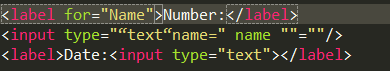

1.对WEB标准以及W3C的理解与认识
标签闭合、标签小写、不乱嵌套、提高搜索机器人搜索几率、使用外 链css和 js脚本、结构行为表现的分离、文件下载与页面速度更快、内容能被更多的 用户所访问、内容能被更广泛的设备所访问、更少的代码和组件，容易维 护、 改版方便，不需要变动页面内容、提供打印版本而不需要复制内容、提高网站易用性；
标签闭合、标签小写、不乱嵌套、提高搜索机器人搜索几率、使用外 链css和 js脚本、结构行为表现的分离、文件下载与页面速度更快、内容能被更多的 用户所访问、内容能被更广泛的设备所访问、更少的代码和组件，容易维 护、 改版方便，不需要变动页面内容、提供打印版本而不需要复制内容、提高网站易用性；
HTML是一种基本的WEB网页设计语言，XHTML是一个基于XML的置标语言 最主要的不同： XHTML 元素必须被正确地嵌套。 XHTML 元素必须被关闭。 标签名必须用小写字母。 XHTML 文档必须拥有根元素。
用于声明文档使用那种规范（html/Xhtml）一般为 严格 过度 基于框架的html文档 加入XMl声明可触发，解析方式更改为IE5.5 拥有IE5.5的bug
块级元素：div p h1 h2 h3 h4 form ul
行内元素: a b br i span input select
常见的空元素：br,hr,img,input,link,meta
鲜为人知的空元素：area,base,col,command, embed,keygen,param,source,track,wbr
Css盒模型:内容，border ,margin，padding
内联 内嵌 外链 导入
区别 ：同时加载
前者无兼容性，后者CSS2.1以下浏览器不支持 Link 支持使用javascript改变样式，后者不可 link属于XHTML标签，除了加载CSS外，还能用于定义RSS, 定义rel连接属性等作用；而@import是CSS提供的，只能用于加载CSS;
基本可以分为通配选择器，标签选择器，类选择器，ID选择器，简单属性选择，具体属性选择，根据部分属性值选择，特定属性选择，从结构上来分还有后代选择器，子元素选择器，相邻兄弟选择器以及伪类。
可以的有 font-size font-family color
不可以的有 border padding margin background-color width height等
!important>行内>id>类>标签|伪类|属性选择器>伪对象>继承>通配符
!important优先级高于内联
Ie(Ie内核) 火狐（Gecko） 谷歌（webkit） opear(Presto)
1.双边距BUG float引起的 使用display
2.3像素问题 使用float引起的 使用dislpay:inline -3px
3.超链接hover 点击后失效 使用正确的书写顺序 link visited hover active
4.Ie z-index问题 给父级添加position:relative
5.Png 透明 使用js代码 改
6.Min-height 最小高度 !Important 解决
7.select 在ie6下遮盖 使用iframe嵌套
8.为什么没有办法定义1px左右的宽度容器（IE6默认的行高造成的，使用over:hidden,zoom:0.08 line-height:1px）
Alt 当图片不显示是 用文字代表。
Title 为该属性提供信息
Reset重置浏览器的css默认属性 浏览器的品种不同，样式不同，然后重置，让他们统一
Css精灵,把一堆小的图片整合到一张大的图片上，减轻服务器对图片的请求数量
在使用雪碧图的时候，先把要用到雪碧图的元素的背景设为雪碧图，在分别通过background-position 定位所使用的图在雪碧图的位置，一定要的注意的是，设置背景图片为雪碧图所使用的选择与进行雪碧图中的小图标定位的选择要一致。
盒子模型 渲染模式的不同
使用 window.top.document.compatMode 可显示为什么模式
语义化的HTML就是写出的HTML代码，符合内容的结构化（内容语义化），选择合适的标签（代码语义化），能够便于开发者阅读和写出更优雅的代码的同时让浏览器的爬虫和机器很好地解析。
1.语义化有利于SEO，有利于搜索引擎爬虫更好的理解我们的网页，从而获取更多的有效信息，提升网页的权重。
2.在没有CSS的时候能够清晰的看出网页的结构，增强可读性。
3.便于团队开发和维护，语义化的HTML可以让开发者更容易的看明白，从而提高团队的效率和协调能力。
4.支持多终端设备的浏览器渲染。
1.使用空标签清除浮动 clear:both（理论上能清楚任何标签，，，增加无意义的标签）
2.使用overflow:auto（空标签元素清除浮动而不得不增加无意代码的弊端,,使用zoom:1用于兼容IE）
3.是用afert伪元素清除浮动(用于非IE浏览器)
label标签来定义表单控制间的关系,当用户选择该标签时，浏览器会自动将焦点转到和标签相关的表单控件上。
下面是label的两种用法：

有两种， IE 盒子模型、W3C 盒子模型；
盒模型： 内容(content)、填充(padding)、边界(margin)、 边框(border)；
区 别： IE的content部分把 border 和 padding计算了进去;
1.CSS3实现圆角(border-radius)，阴影(box-shadow)
2.对文字加特效(text-shadow)，线性渐变(gradient)，旋转(transform)
3.transform:rotate(9deg) scale(0.85,0.90) translate(0px,-30px) skew(-9deg,0deg);// 旋转,缩放,定位,倾斜
4.增加了更多的CSS选择器 多背景 rgba
5.在CSS3中唯一引入的伪元素是 ::selection.
6.媒体查询，多栏布局
7.border-image
1.拖拽释放(Drag and drop) API
2.语义化更好的内容标签(header,nav,footer,aside,article,section)
3.音频、视频API(audio,video)
4.画布(Canvas) API
5.表单控件，calendar、date、time、email、url、search
纯表现的元素：basefont，big，center，font, s，strike，tt，u；
对可用性产生负面影响的元素：frame，frameset，noframes；
DOCTYPE声明的方式是区分HTML和HTML5标志的一个重要因素，此外，还可以根据新增的结构、功能元素来加以区分。
p:first-of-type 选择属于其父元素的首个
元素的每个
元素。
p:last-of-type 选择属于其父元素的最后
元素的每个
元素。
p:only-of-type 选择属于其父元素唯一的
元素的每个
元素。
p:only-child 选择属于其父元素的唯一子元素的每个
元素。
p:nth-child(2) 选择属于其父元素的第二个子元素的每个
元素。
:enabled、:disabled 控制表单控件的禁用状态。
:checked，单选框或复选框被选中。
共同点:对内联元素设置float和absolute属性，可以让元素脱离文档流，并且可以设置其宽高
不同点:float仍会占据位置，position会覆盖文档流中的其他元素。
display:none:隐藏对应的元素，在文档布局中不再给它分配空间，它各边的元素会合拢， 就当他从来不存在。
visibility:hidden:隐藏对应的元素，但是在文档布局中仍保留原来的空间
box-sizing属性主要用来控制元素的盒模型的解析模式。默认值是content-box。
content-box:让元素维持W3C的标准盒模型。元素的宽度/高度由border + padding + content的宽度/高度决定，设置width/height属性指的是content部分的宽/高
border-box：让元素维持IE传统盒模型(IE6以下版本和IE6~7的怪异模式)。设置width/height属性指的是border + padding + content
标准浏览器下，按照W3C规范对盒模型解析，一旦修改了元素的边框或内距，就会影响元素的盒子尺寸，就不得不重新计算元素的盒子尺寸，从而影响整个页面的布局
absolute :生成绝对定位的元素，相对于最近一级的定位不是 static 的父元素来进行定位。fixed(老IE不支持)生成绝对定位的元素，相对于浏览器窗口进行定位。
relative :生成相对定位的元素，相对于其在普通流中的位置进行定位。static 默认值。没有定位，元素出现在正常的流中
浮动元素脱离文档流，不占据空间。浮动元素碰到包含它的边框或者浮动元素的边框停留。
1.使用空标签清除浮动。 这种方法是在所有浮动标签后面添加一个空标签 定义css clear:both. 弊端就是增加了无意义标签
2.使用overflow。 给包含浮动元素的父标签添加css属性 overflow:auto; zoom:1; zoom:1用于兼容IE6
3.使用after伪对象清除浮动。该方法只适用于非IE浏览器
移除空格，使用margin负值、使用 font-size:0、letter-spacing 、word-spacing
href 是指向网络资源所在位置，建立和当前元素（锚点）或当前文档（链接）之间的链接，用于超链接。
src是指向外部资源的位置，指向的内容将会嵌入到文档中当前标签所在位置；在请求src资源时会将其指向的资源下载并应用到文档内， 例如js脚本，img图片和frame等元素。当浏览器解析到该元素时，会暂停其他资源的下载和处理，直到将该资源加载、编译、执行完毕， 图片和框架等元素也如此，类似于将所指向资源嵌入当前标签内。这也是为什么将js脚本放在底部而不是头部。
px和em都是长度单位，区别是，px的值是固定的，指定是多少就是多少，计算比较容易。em得值不是固定的，并且em会继承父级元素的字体大小。
浏览器的默认字体高都是16px。所以未经调整的浏览器都符合: 1em=16px。那么12px=0.75em, 10px=0.625em